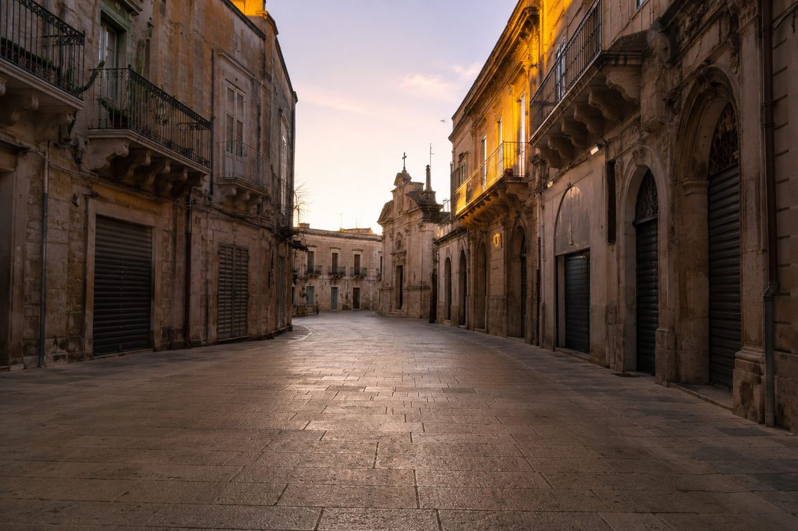
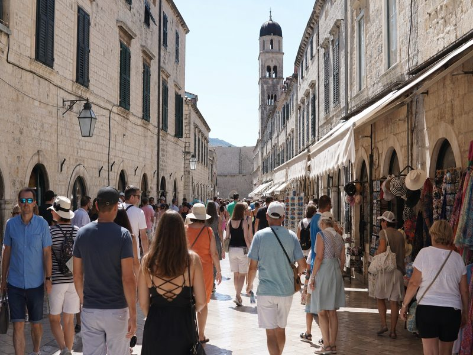
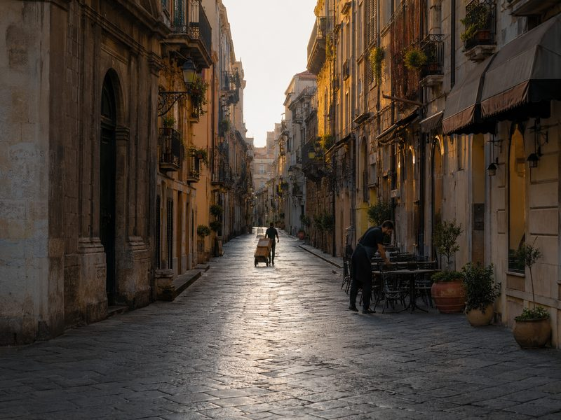
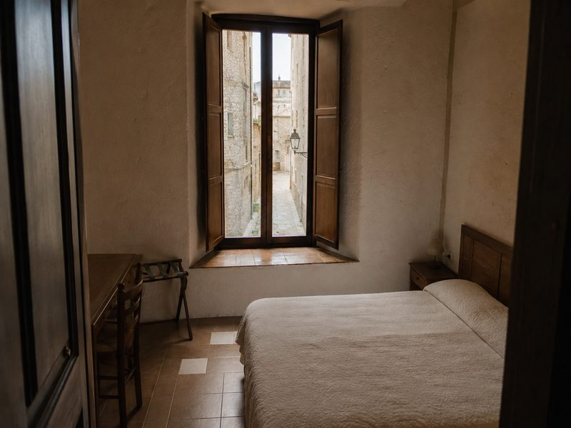
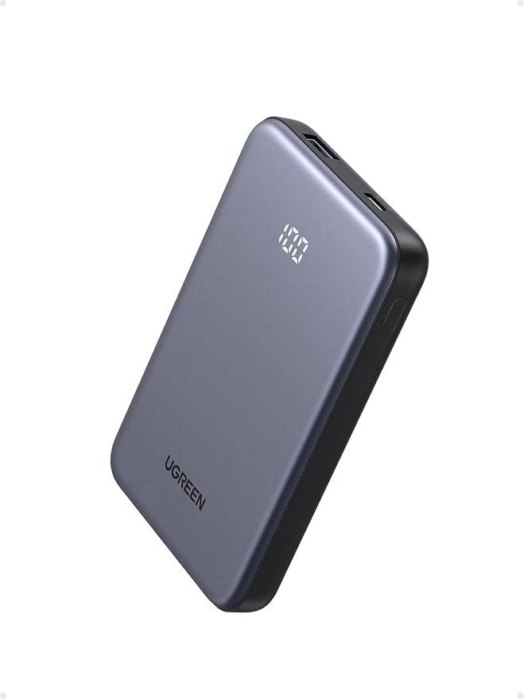

The Same Place, Two Hours Earlier, Is a Different Place
The street does not need to change for your experience of it to change. Arrive at 10:00 and you may meet the timetable of breakfast, coaches and ferries; arrive at 07:00 and you can meet the same buildings before that timetable catches up.
The short version
- Aim for the beach at 06:00–06:30, a viewpoint within 30 minutes of first light, and the old town around 07:00 when those places matter most to you.
- For a market, target its opening hour rather than simply turning up later in the morning.
- Treat an early start as a deliberate trade-off: set the alarm, then protect time for a slower breakfast or short nap later instead of adding another day to the trip.
- Check transport against your target arrival, because one 09:30 ferry or coach can turn a quiet morning into a busy one surprisingly quickly.
As an Amazon Associate I earn from qualifying purchases. Links below are affiliate links (#ad) - they cost you nothing extra. Nothing here is a paid placement, and no brand sees this page before it goes up.
The morning crowd is a timetable, not a mystery
In many coastal towns, the busiest spell is partly predictable because several routines converge. Hotel breakfast commonly starts around 07:00–08:00, organised coach tours often arrive later in the morning, and a first day-trip ferry can put another wave of visitors into the same old-town square. If the first ferry arrives at 09:30, for example, arriving at 07:00 gives you about 2½ hours before that particular wave reaches town.
That difference matters most in places where the streets, viewpoints or waterfront are the attraction rather than somewhere you are simply passing through. A 10:00 photograph may show the same street with two coaches and a ferry crowd; an earlier visit can give you a much clearer view of the same buildings. The architecture has not changed, but you have changed the conditions under which you see it.


Two hours can buy a better part of the day
The useful sequence is simple: beach at 06:00–06:30, viewpoint near first light, old town around 07:00, and the market during its opening hour. You do not need to follow every step. Pick one priority location, give it 60–90 quiet minutes, and build breakfast or a later walk around it.
The cost is practical rather than financial. A 06:00 beach visit may mean setting an alarm earlier than a relaxed morning and taking a short nap after lunch. A 07:00 old-town walk may mean eating later than the hotel's breakfast window or carrying a small snack. The point is to exchange sleep for a specific window of lower activity rather than simply waking early without a plan.
Check the timetable before choosing the hour
Check the last bus, not the first. Getting somewhere early is useful only if you can still get back when you want to leave. If the last convenient bus is at 21:30, for example, note that time before committing to a full-day outing; leave a 15–30 minute buffer for the walk to the stop and an unexpected delay.
Check the market opening time, not its name. If the market opens at 07:00, aim for 07:00–08:00 if you want the first hour of trading. Arriving at 10:00 means you have already given up three hours of that opening period, while arriving at 06:30 simply leaves you waiting outside for half an hour.
Check the first ferry against your target hour. If a day-trip ferry reaches the town at 09:30, use 09:00 as a practical quiet cutoff and plan to finish your priority streets by then. If you want a full two-hour quiet window, target an arrival around 07:00 rather than hoping that 08:45 will feel equally calm.
What we would actually buy

Our illustration of the general look, not the actual product or place10,000mAh 22.5W power bank
An early start can put your phone on navigation, tickets and photos for several hours before many cafés are open. A 10,000mAh 22.5W power bank gives you a defined backup capacity and charging speed rather than relying on an unspecified "portable charger." Check its ports, cable compatibility and actual device requirements before buying. It is not for someone who has reliable charging access throughout the day and does not need backup power.
Best for: early starts away from a socket
Shop power bank →paid link
Packable 20L daypack
An early morning can turn into a beach, viewpoint and old-town day before you return to your room. A 20L pack gives you a concrete capacity for water, a light layer, camera gear and other small essentials without committing to a full-size hiking pack. Check the bag's dimensions, empty weight and carrying setup against what you normally take for a day out. It is not for someone who travels with only a phone and wallet and prefers to carry nothing beyond pockets.
Best for: light carry-on days and early walks
Buy on Amazon →paid link
Stays inside the old town
Staying inside the old town can turn a 07:00 walk into a practical 5–15 minute departure instead of a longer transfer from a hotel farther away. Check the property's exact location and estimate the walking time to your first street or viewpoint; "near the old town" is not the same as staying inside it. It is not for someone who values a quieter location outside the historic centre more than saving travel time in the morning.
Best for: seeing the old town before the crowds
Find stays on Amazon →paid linkIf you only do one thing
First, pick the one place you most want to experience quietly and find its opening, ferry and transport times. Give that place a concrete 60–90 minute window, work backwards from the target arrival, and add a 15–30 minute transport buffer. That way, your alarm is serving a specific part of the day rather than simply making you wake up early.
How we choose
We look for pieces that change how a small room works, not the cheapest option and not the most photographed one. Everything here has to survive a rental: no drilling, no permanent fittings, nothing that needs a second person to install.
Room images on this site are our own illustrations, not photographs of the products. We link to the retailer so you can see the real item.
Written and selected by Rooms and Roads · Updated August 2026 · links checked August 2026